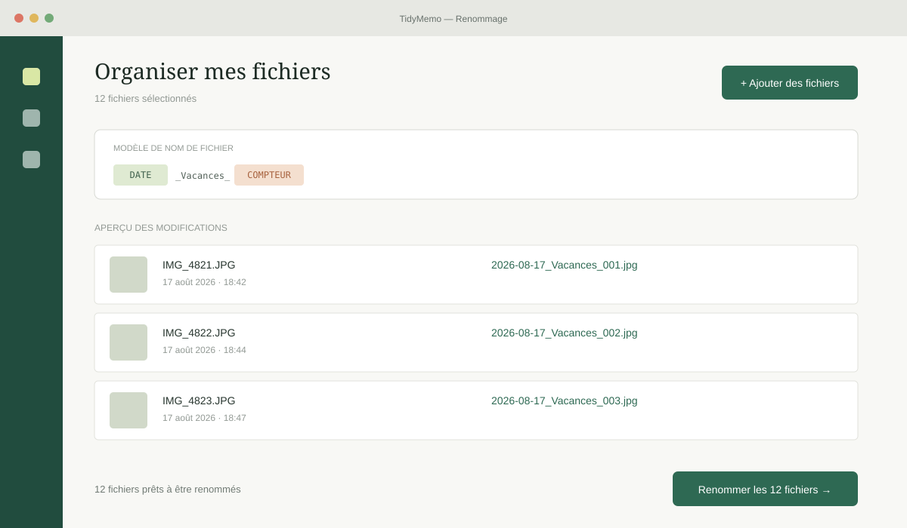

01
Renommer avec précision
Utilisez la date de prise de vue, de création ou de modification, un modèle prêt à l'emploi, un format de date libre ou les champs EXIF détectés. JPEG, PNG, GIF, BMP, TIFF, HEIC et HEIF sont reconnus.
DATE_EXIF_HEURE
Gratuit, open source et respectueux de votre vie privée
Renommez et classez vos photos, compressez ou convertissez vos vidéos, puis transformez vos images en diaporamas musicaux. Tout se passe sur votre ordinateur.
Sans compte · Sans publicité · Sans envoi dans le cloud
∞100 % localAucun média envoyé
⚡Traitement par lotsFichiers et dossiers entiers
◇Multi-plateformeWindows, macOS et Linux
⌘Open sourceTransparent et gratuit
Quatre espaces, une seule collection
TidyMemo accompagne tout le cycle d'entretien d'une médiathèque personnelle, sans devenir propriétaire de vos fichiers.
01
Utilisez la date de prise de vue, de création ou de modification, un modèle prêt à l'emploi, un format de date libre ou les champs EXIF détectés. JPEG, PNG, GIF, BMP, TIFF, HEIC et HEIF sont reconnus.
02
Parcourez aussi les sous-dossiers et créez une hiérarchie à partir de jetons comme %year%/%month%. L'aperçu montre le nom et la destination avant tout déplacement.
03
L'Explorateur EXIF réunit les champs présents dans votre sélection et permet de les insérer dans un modèle personnalisé. Les collisions de noms sont suffixées, jamais écrasées.
04
Compressez en lot avec des préréglages ou des réglages CRF avancés, choisissez H.264/H.265, accélérez, convertissez en MP4, MKV, MOV, WebM ou AVI, et exportez des GIF.
05
Ordonnez vos photos, réglez durée, cadence, qualité et résolution jusqu'à la 4K. Ajoutez musique, arrière-plan flouté, couleur, dégradé ou image, bordure et ombre, puis exportez en MP4.
06
Les originaux vidéo restent intacts dans un sous-dossier de sortie configurable. Suivez la progression et l'espace gagné, annulez une file d'attente et ouvrez directement le résultat.
Chaque outil à sa place
Les vues ci-dessous illustrent les principaux espaces de travail de l'application.

Pour bien démarrer
Prêt quand vous l'êtes
TidyMemo est gratuit et open source. Les paquets actuels ne sont pas signés par un éditeur vérifié : votre système peut afficher un avertissement à l'installation.